Membership
An Industry Stronger Together
ACD’s strength comes from the companies and people that make up its community. In 2026, that community continued to grow, bringing together chemical distribution firms, warehouses, and transportation companies, as well as service providers to share expertise, build relationships, and strengthen the entire chemical distribution industry.
A Growing Industry Community
Companies Across the ACD Community
239Members (Including distribution, warehouses, and asset-based transportation companies)
97Service Provider Affiliates
43Chemical Producer Affiliates
3Global Distribution Partners
39applications received during FY26, including 12 Member applications, marking the highest total application volume since 2019.
+89%application revenue vs. previous year
+60%vs. three-year average
The Reach Behind the Membership
ACD members represent a significant part of the chemical distribution industry and the supply chains it supports. According to member-reported 2025 data:
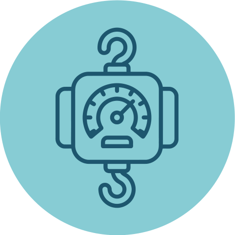
500+New Expertise Across the Alliance
ACD introduced a new affiliate category for FDIC- or SIPC-insured commercial and investment banks, bringing new financial-sector perspectives and resources to the ACD community.
Small Team. Big Reach.
For smaller distribution firms, ACD membership connects lean teams to the expertise, resources, and industry relationships of a much larger network.
ACD Responsible DistributionTM really helped when we were very small. It was helpful to have the ACD logo on our paperwork. We could show potential customers that we were sticking to the standards, which means we do things safely, responsibly, and sustainably. People understood that we were small but serious players— Tracy Kruse, Sr. Manager of Operations & Imports, Rierden Chemical & Trading Company
ACD continued building relationships with its current and prospective members and the broader chemical industry throughout the year.
- 13 Member Presentations
- 9 Chemical industry events attended
- 95+ industry professionals had the opportunity to learn about ACD membership and benefits through ACD’s presence at Specialty & Agro Chemicals America.
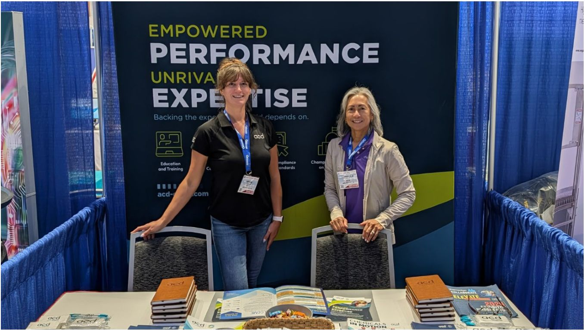
My goal is to make my company better, and I need ACD to do that.— Molly Kellogg, Chairman, President, and Chief Executive Officer, Hubbard-Hall, Inc.
ACD is a lifeline of support to find the appropriate resources, whether that’s in a time of need or an opportunity to fulfill a curious mind.”— Michael Sullivan, Sales Development Manager, Superior
Turning Member Insight Into Industry Evidence
In 2026, ACD surveyed members to build a clearer picture of the companies, workforce, and business practices that make up chemical distribution.
The findings give ACD credible industry data to support its work with legislators, regulators, industry partners, and other stakeholders. They also help identify the industry’s strengths and challenges and provide greater context for the companies and people ACD represents.
- 95% of respondents are small businesses
- NEARLY 45% of employees are age 50 or older
- 9% FEWER OSHA-recordable incidents reported by ACD members compared with the industry average
- NEARLY 70% maintain certifications beyond those required by regulation from member data to an industry voice
A single company can tell its own story. Together, ACD can use member data to tell a broader, evidence-based story about chemical distribution and the role the industry plays in supporting customers, communities, and the nation’s supply chain.
Government Relations
A Strong Voice for Chemical Distribution
Throughout 2026, chemical distribution companies navigated a changing business and regulatory environment. Federal policy decisions could quickly affect how companies operate, move products, manage compliance, and plan for the future. ACD worked throughout the year to ensure the industry’s concerns were heard and members had the information they needed to respond.
The story isn’t simply how many meetings ACD held or comments it submitted.
IT’S THE DIFFERENCE THAT WORK MADE FOR THE INDUSTRY.
Championing Chemical Distribution
Protecting Competition in Freight Rail
The proposed Union Pacific–Norfolk Southern merger raised significant concerns about further consolidation in the freight rail industry, including the potential for reduced competition, fewer service options, and increased costs for chemical shippers.
Tonnage
That potential concentration made the proposed merger a significant advocacy priority for ACD throughout the year.
- Made the merger a key focus of the Washington Fly-In
- 120+ Fly-In attendees
- 160+ congressional meetings
- Joined the Stop the Rail Merger Coalition
- Participated in meetings with senior administration officials
- Joined a shipper coalition seeking summary denial from the STB
- Launched advertising and op-eds opposing the merger
- Educated members through a webinar and Annual Meeting session
Government Affairs: Advocating for Industry Competition
ACD worked throughout the year to bring the chemical distribution industry’s concerns directly to policymakers, regulators, and others involved in the proposed merger.
- Made freight rail competition a central issue at the Washington Fly-In, where 120+ participants held 160+ congressional meetings.
- Joined the Stop the Rail Merger Coalition to coordinate opposition to further freight rail consolidation.
- Met with senior administration officials to communicate concerns about competition, service, and the potential effects on chemical shippers.
- Joined a coalition of shippers calling on the Surface Transportation Board to summarily deny the merger application.
- Educated members about the proposed merger and its potential implications through a webinar and Annual Meeting programming.
- Supported broader outreach that helped bring additional attention to the industry’s concerns.
Communications: Expanding the Reach of ACD’s Position
Alongside the Government Affairs effort, ACD launched a coordinated, multi-channel communications campaign to extend the industry’s concerns to the broader audiences following and influencing the freight rail debate.
The campaign combined dedicated web content, member communications, articles and podcasts with press outreach, op-eds, coalition communications, paid digital outreach, and POLITICO Transportation placements. Together, these efforts kept the industry informed while putting ACD’s position in front of policymakers, regulators, media, and other external stakeholders.
7.2M+ Opportunities for ACD’s Message to Be Seen
Digital campaign impressions across targeted channels10.7K+ Visits to ACD Content
Clicks generated by the campaign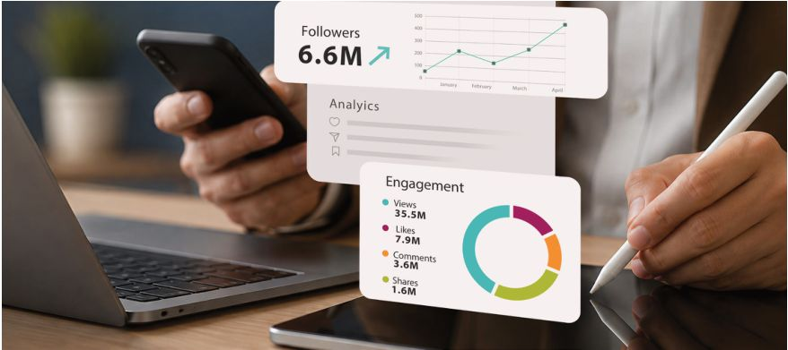
0.15% Click-Through Rate
The share of digital campaign impressions that resulted in a visit to ACD content.Protecting competition helps preserve service options and supports a stronger freight rail environment for chemical distribution companies.
Turning HazCom Concerns Into Action
IN 2024, OSHA’s updated Hazard Communication Standard introduced new requirements, unclear guidance, and compliance challenges for companies relying on upstream suppliers.
- ACD met with OSHA officials and led a coalition of 19 trade associations calling for additional compliance time, clearer guidance, and practical implementation resources.
- ACD kept members informed through regulatory alerts and a dedicated HazCom webinar.
- ACD asked. OSHA responded.
- 4 months additional compliance time
- Updated guidance addressing SDS requirements raised by ACD and its coalition
- Updated comparison document helping companies understand changes between the standards
- Enforcement discretion included in OSHA’s implementation directive
Companies gained additional time and clearer OSHA guidance to help them meet the updated HazCom requirements, particularly when compliance depended on information from upstream suppliers.
Helping Companies Navigate a Year of Trade Uncertainty
Rapid tariff actions, customs developments, and changing trade requirements created significant uncertainty for companies importing and distributing chemical products.
ACD became a central source of trade information and support for members, providing:
- A members-only trade resource hub
- 20+ dedicated trade alerts
- Expert-led webinars and import compliance training
- Comments on proposed tariff actions
- Direct assistance with CBP and ACE account issues
- Timely Information: Helping hundreds of member companies keep pace with changing tariff, customs, and regulatory requirements
- Stronger Compliance :Practical training to help reduce the risk of customs delays, filing errors, and potential enforcement actions
- A Voice In Trade Policy: Comments on major tariff proposals brought chemical distribution concerns before policymakers
- Direct Member Support: Helping companies navigate CBP and ACE issues and identify potential duty savings, avoided costs, and refund opportunities
Better information and practical support helped members make informed decisions, strengthen compliance, and respond to a rapidly changing trade environment.
Representing the Industry on Critical Issues
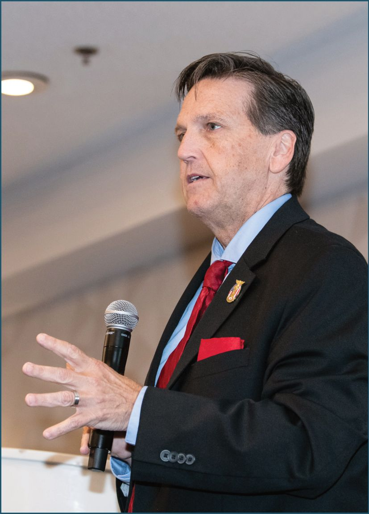
The stories above are only part of ACD’s year-round work to represent chemical distribution before policymakers and regulators. ACD also accomplished…
Government Affairs and member alerts
250+Congressional meetings
50+Meetings with federal agencies
320+Letters and comments submitted
120+Washington Fly-In participants
160+Fly-In congressional meetings
30+Comment letters and testimony
561,000+LinkedIn and X impressions
9,000+LinkedIn and X engagements
Bringing Policymakers to the Industry
Advocacy also happens outside Washington. ACD helps member companies build relationships with elected officials by bringing policymakers directly to their facilities.
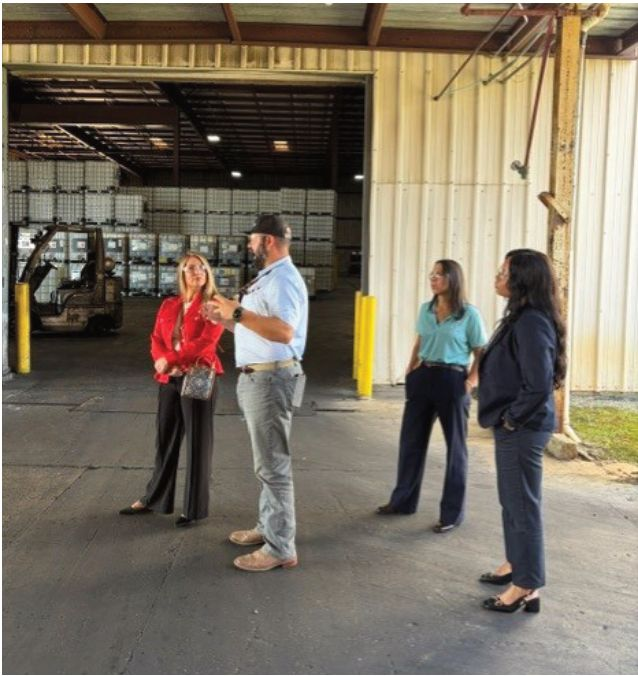
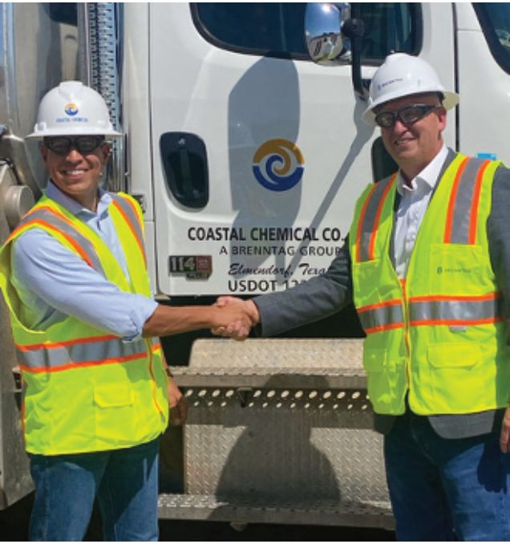
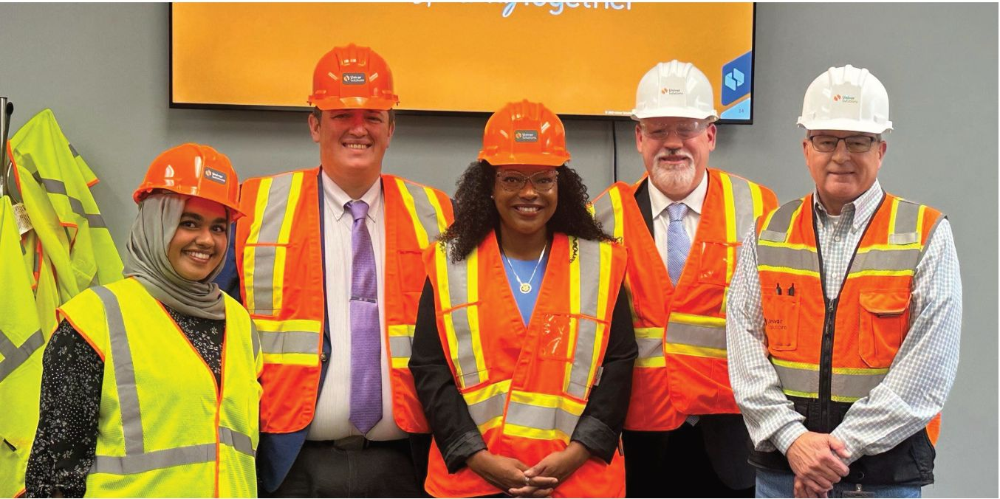
Facility visits give companies an opportunity to elevate their company and industry profile with elected officials and build relationships with their Members of Congress.
Interested in Hosting a Site Visit?
Connect with ACD’s Legislative Affairs Manager, Tyler Farrar, at tfarrar@acd-chem.comImproving Access to Regulatory Resources
Explore the Regulatory
Resource Guide
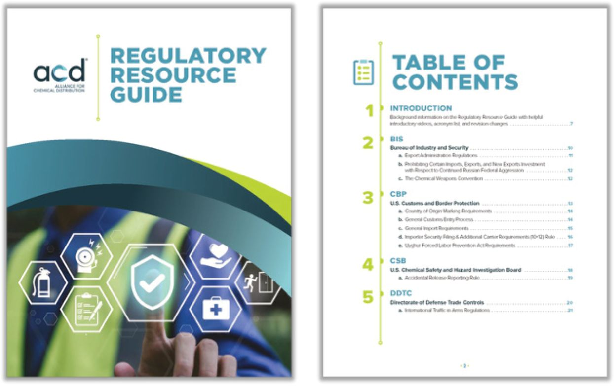
In 2026, ACD strengthened its resources to help members navigate complex regulations, stay informed on policy developments, and make better-informed business decisions.
ACD updated its Regulatory Resource Guide to make critical regulatory information easier to find, understand, and use.
- Federal AgenciesKey information and resources
- Compliance RequirementsGuidance on important regulatory obligations
- Videos + ResourcesTools to help members understand complex requirements
Launching a New View
on Washington
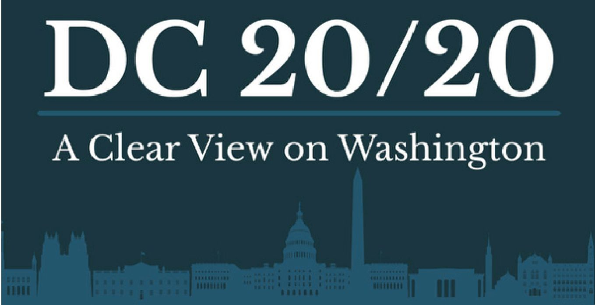
In 2026, ACD launched DC 20/20, a members-only monthly Government Affairs newsletter providing timely perspective on policy issues, advocacy efforts, and legislative and regulatory developments affecting chemical distribution.
Designed to complement NewsBrief, DC 20/20 added a dedicated resource for following developments in Washington and ACD’s work on industry priorities.
Being able to meet with government regulatory leaders [through ACD’s Regulatory and Chemical Warehousing committees] and help shape new regulations has been very rewarding. It’s different to read a regulation than it is to speak to the person who helped to make the regulation.— Melody Moore, Director, Quality and Environment, Health, and Safety at Rinchem Company, LLC
Gaining a comprehensive understanding of how the regulations affect not only our company, but all of our supply chain partners and the challenges they face. through ACD, helped me strengthen my problem-solving and decision-making capabilities.— Jessica Fegan, Senior Director of Quality and Operations, Connection Chemical
ACD’s Voice, Amplified
Giving the Chemical Distribution Industry a Larger Platform and a Louder Voice
Throughout 2026, Communications brought member and industry perspectives to broader audiences through earned media, thought leadership, digital channels, and ACD-owned content.
Earned Media
- 172: Earned media placements
- 10: Op-eds and bylined articles
- 41: Press releases issued
Member & Industry Voices
- 6 Podcast episodes
- 5,466 Podcast listens/downloads
Keeping Members Informed
- 576,570 Connections to member inboxes
ACD’s newsletters, alerts, and campaigns were delivered to recipients a combined 576,570 times.
- 25.5% Average email open rate
Growing Our Audience
ACD in Conversation
ACD was featured in leading media outlets on the issues shaping the chemical distribution industry.
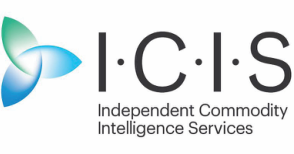
Workforce
Developing Chemical Distribution’s Workforce
In 2026, ACD expanded its training, professional development, and workforce resources through its subsidiary, ASK Distribution Consulting, LLC.
Developing the Industry’s Leadership Pipeline
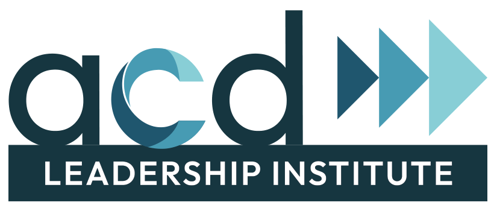
The ACD Leadership Institute continued developing talent at multiple stages of the leadership journey. In 2026, 65 professionals from 43 companies participated across the Aspiring, Emerging and Executive Leaders programs.
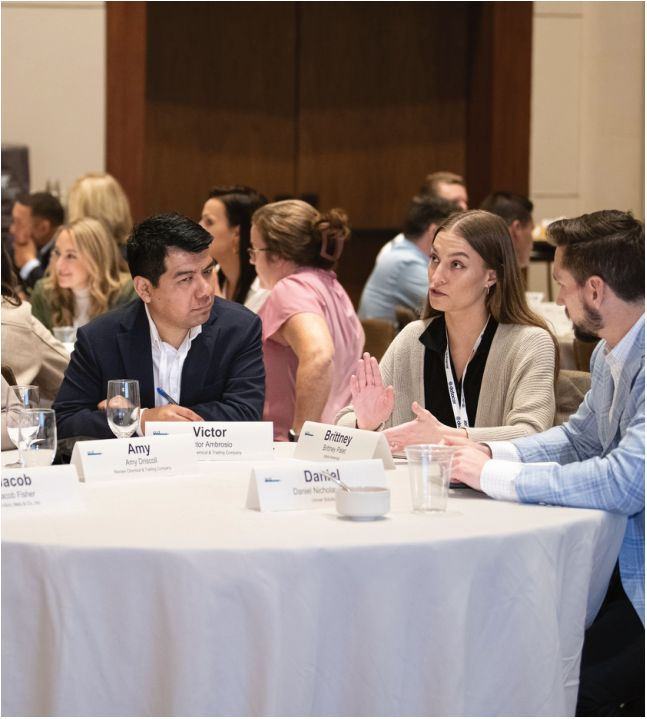
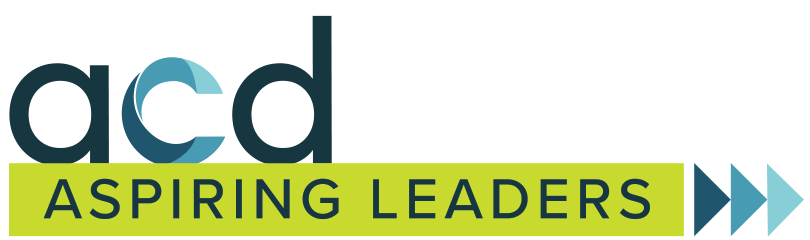
10 participants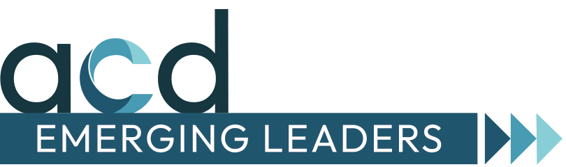
45 participants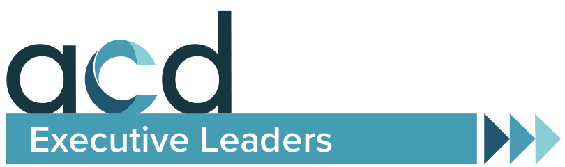
10 participantsThe program also demonstrated a growing leadership pipeline. Four graduates of the inaugural Aspiring Leaders cohort advanced into Emerging Leaders in 2026, continuing their development through the next level of the Institute.
Who’s in the Leadership Institute?
of participants are Director-level or above
work in Sales & Account Management or Supply Chain/Operations/Logistics
Together, the cohorts bring professionals from across business functions and career levels into the Leadership Institute, connecting those responsible for both strategic direction and day-to-day execution across chemical distribution companies.
From Learning to Industry Impact
Emerging Leaders are putting their learning into practice through a year-long capstone focused on three industry priorities:
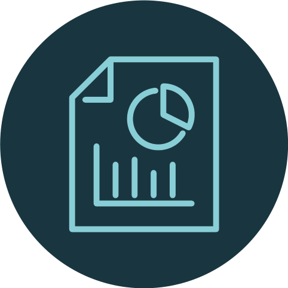
Industry Data & Advocacy:Supporting stronger policy outcomes
Engaging future industry leaders
Advancing industry performance
Strengthening Specialized Education Through ASK
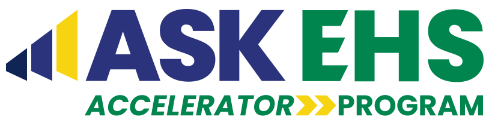
For ACD members, the program offers an opportunity to develop EHS talent from within, strengthen internal expertise, and build long-term safety and compliance capabilities.
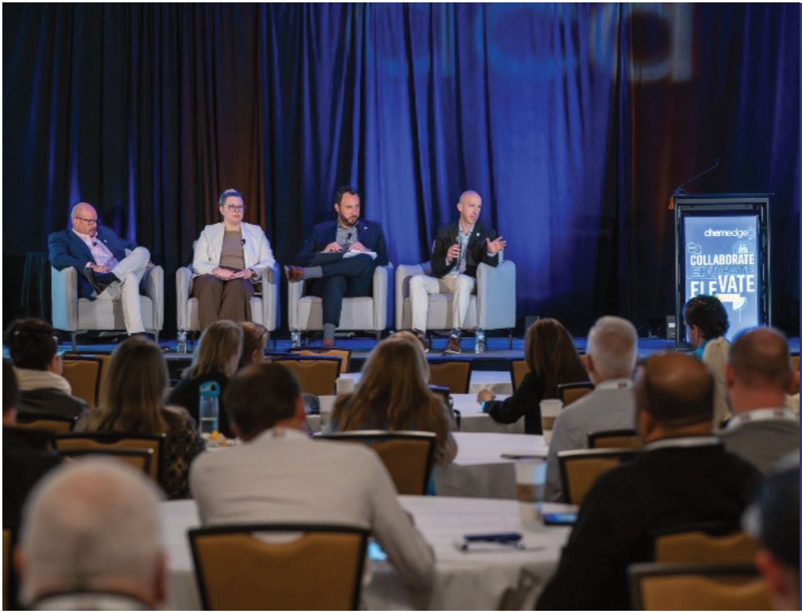
Equipping Companies With Workforce Insights
In 2026, ACD and ASK Distribution Consulting provided industry research and benchmarking resources to help chemical distribution companies make more informed decisions about recruitment, retention, compensation, and workforce development.
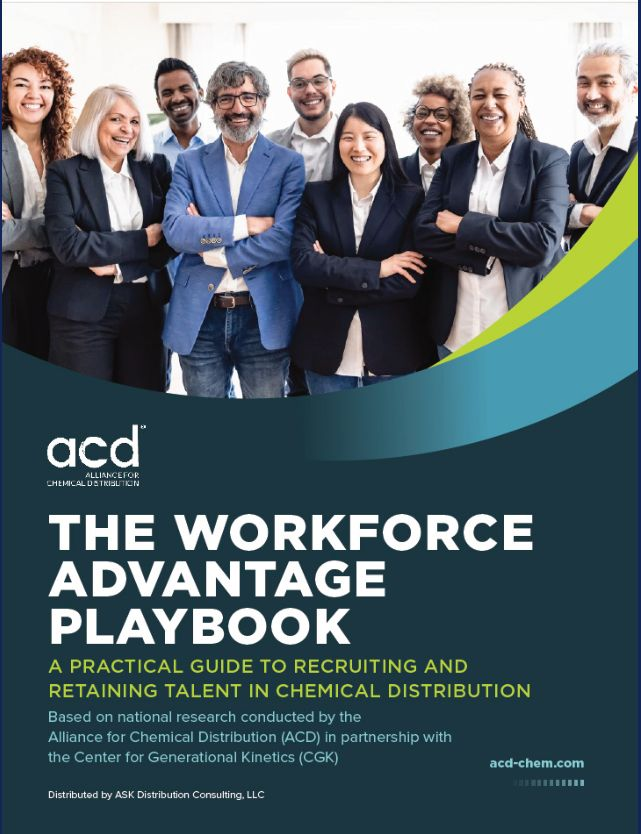
- Workforce Advantage Playbook, an ACD Product
- Research behind the Workforce Advantage Playbook revealed opportunities for companies looking to attract and retain younger workers.
- 28% of younger Americans are unfamiliar with the chemical distribution industry.
- 2 in 3 applicants want to see safety, environmental responsibility, and Responsible Distribution highlighted in job postings.
- 70% of job seekers are more likely to apply when paid on-the-job training is offered.
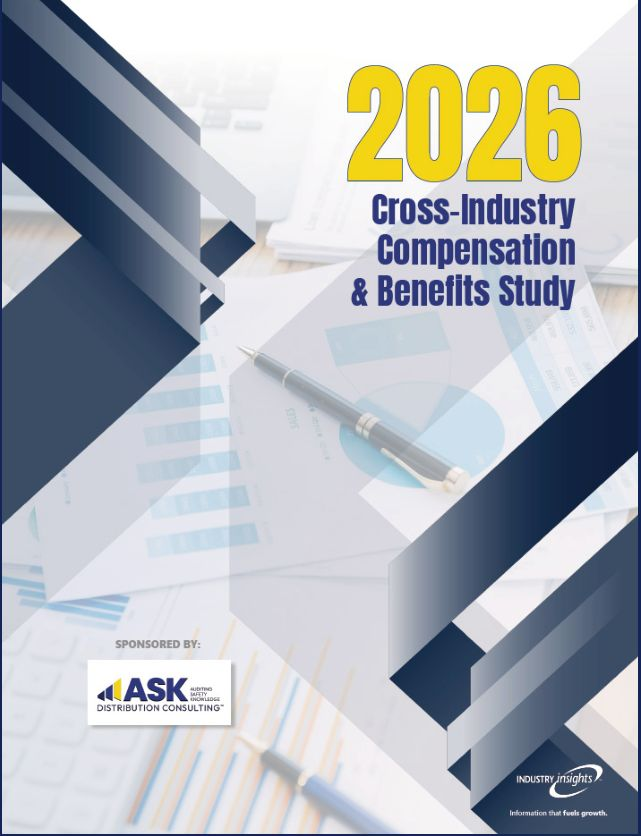
- 502 participating distribution companies
- 8,000 business locations represented
- 35+ benchmark positions across key business functions
Navigating the complexities of our industry is no small task, and I owe much of my growth and subject matter knowledge to the Alliance. The organization’s exceptional educational resources and the brilliant, dedicated and driven professionals and mentors I’ve connected with by through ACD have been invaluable.— Jessica Fegan, Senior Director of Quality and Operations, Connection Chemical
Responsible Distribution
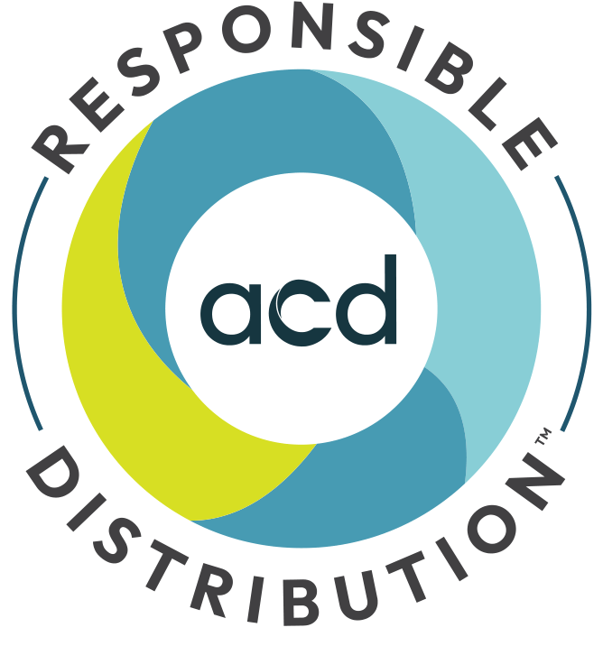
Raising the Standard
ACD Responsible Distribution™ puts ACD members’ commitment to safety, responsibility, and continuous improvement into practice.
Administered by ASK Distribution Consulting, the program reached an important verification milestone in 2026 while continuing to provide education and support to companies navigating Responsible Distribution.
Taking the Responsible Distribution Story to Regulators
In 2026, ACD expanded the reach of Responsible Distribution through a targeted communications campaign focused on key EPA audiences.
The campaign brought ACD members’ commitment to safety, security, environmental performance, and responsible operations directly to networks surrounding EPA decision-makers. By communicating collectively, ACD was able to put the industry’s story before regulatory audiences at a scale individual companies may not be able to achieve on their own.
Rather than pursuing broad visibility, the campaign concentrated ACD content among audiences positioned to influence regulatory understanding and decision-making.
1M+ Opportunities for the Responsible Distribution Story to Be Seen
Targeted campaign impressions3 EPA Decision-Maker Networks Reached
Bringing the industry’s story into audiences surrounding key agency leaders6+ Minutes of Estimated Attention Per Person, Per Month
Giving Responsible Distribution more than a passing presence with targeted audiencesExpanding Chemical Distribution Companies Support
ASK also expanded specialized safety and compliance support for chemical distribution companies and preferred partners through industry partnerships.
Events
Connecting Professionals Across the Industry
ACD brings chemical distribution professionals together to share expertise, strengthen relationships, and learn from one another.
What Changed in 2026
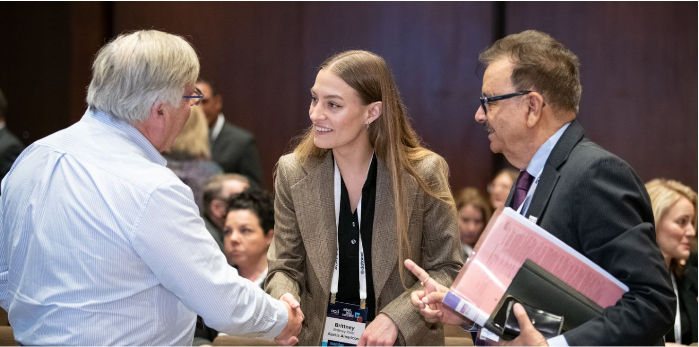
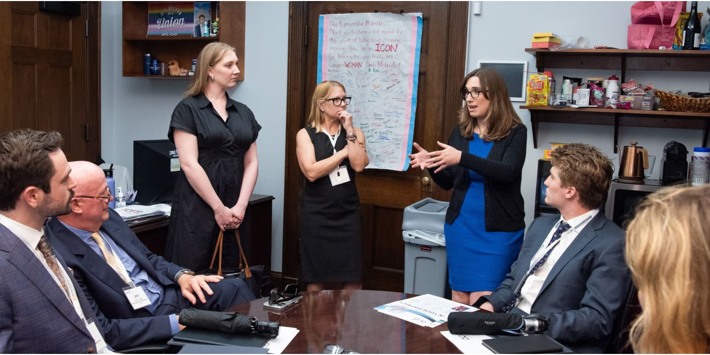
264 Companies
90 First time attendees
198 Companies
78 First time attendees
One of ACD’s top value propositions is the industry networking and getting to know people that I buy from, sell to, and compete with. We’ll all go out of our way to help each other when we’re in need.— Stephen Halpin, President, Norman Fox
The relationships that we have developed by being an ACD member are just astronomical, and they’ll continue for a lifetime. All of our clients and friends made through ACD are special.— Jim Clawson, Chief Executive Officer, Third Coast Chemicals
Community Services
Giving Back to the Communities We Serve
Throughout the year, ACD staff came together to support the communities where we live and work. Through volunteer activities, charitable initiatives, and team service projects, our staff put ACD’s values into action beyond their day-to-day roles.
AFAC Food Drive (November 2024):
ACD staff collected groceries for the Arlington Food Assistance Center, helping provide dignified access to supplemental food for families facing food insecurity.NVFS Holiday Giving (December 2024):
Staff donated new toys to Northern Virginia Family Service, brightening the holiday season for children and families in need.Humane Society of Fairfax County (May 2025):
ACD volunteers assisted with farm maintenance projects including cleaning, painting, and groundskeeping, to support the organization’s animal welfare efforts.Awards and Recognition
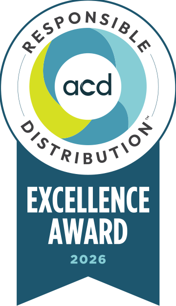
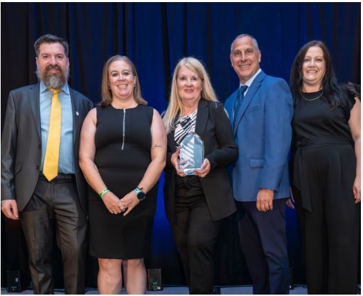
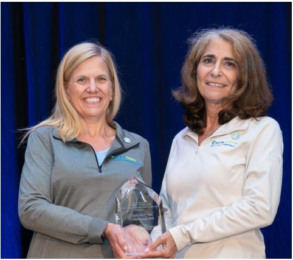
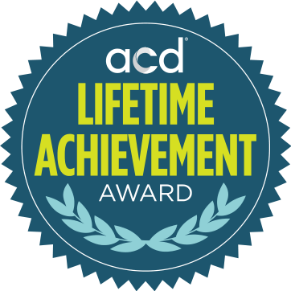
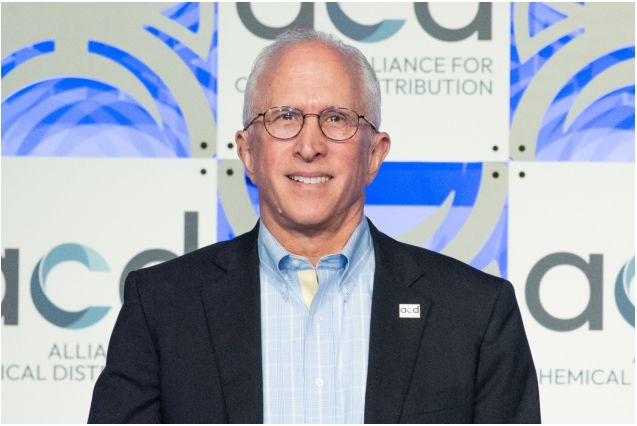
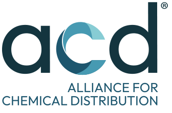
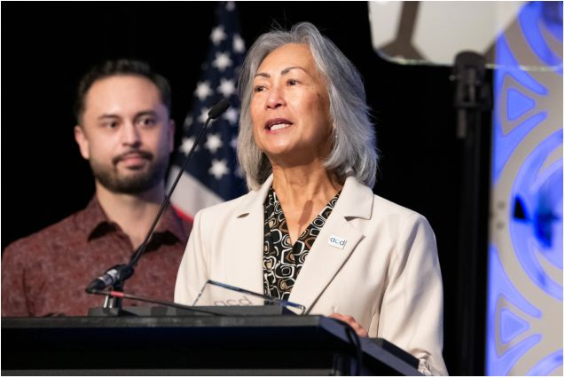
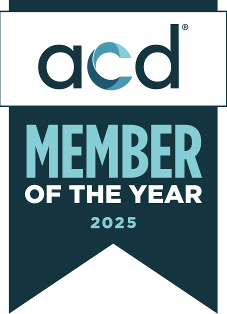
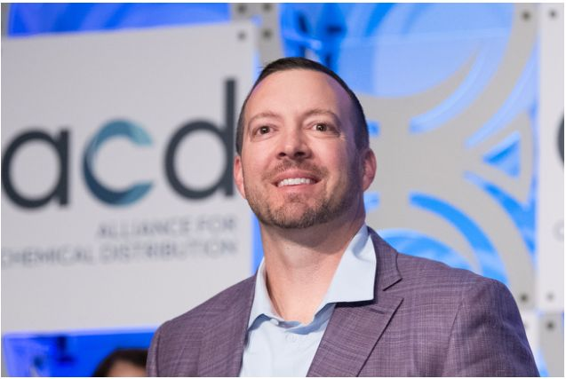
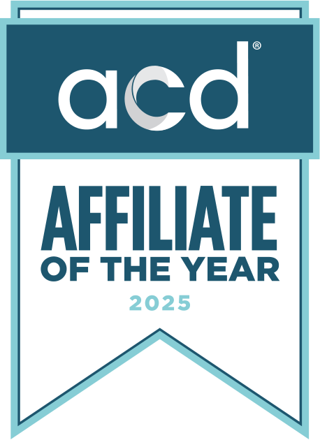
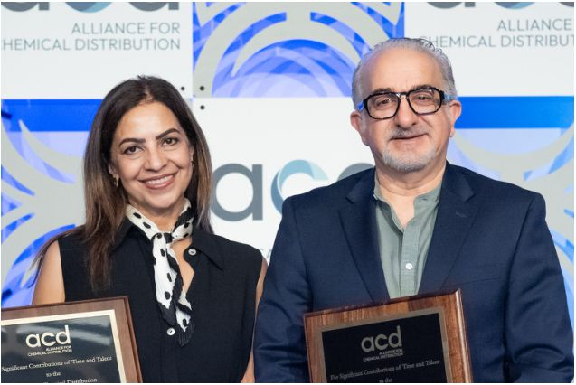
ACD 2026 Board of Directors
2026 Executive Committee
Megan Gluth, Esq., ChairCEO & Owner
Catalynt Solutions, Inc.
Matthew Fridley, Vice ChairVice President, Government Affairs
Brenntag North America, Inc.
Stephen M. Halpin, TreasurerPresident
Norman, Fox & Co.
Eric R. ByerPresident and CEO
ACD
2026 Directors-at-Large
Terry AubryDirector of Quality
EMCO Chemical Distributors, Inc.
Richard G. ErstadVice President, Secretary and General Counsel
Hawkins, Inc.
Jessica FeganSenior Director of Quality & Operations
Connection Chemical LP
Kathryn PoguePresident
Jensen-Souders & Associates, Inc.
Omar SinaphPresident
PVS Nolwood
2026 Regional Directors-at-Large
Jeremy KromePresident, TransChem, Inc.
Kristin Mays-CorbittPresident and CEO
Mays Chemical
Brett MearsPresident, Palmer Logistics
Steven SeelerCEO, Seeler Industries, Inc.